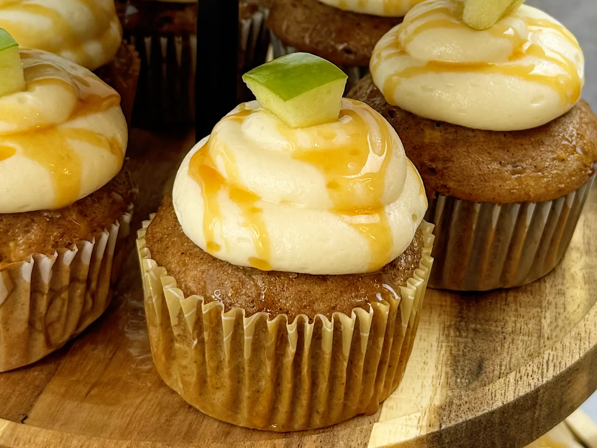

Return to the main page
Caramel Apple Cupcakes

Description
These caramel apple cupcakes are everything you love about a caramel apple in cupcake form! They make the perfect fall dessert.
Ingredients
- 1 package spice cake mix
- 4 large eggs
- 1 cup milk, at room temperature
- 1/2 cup butter, melted and cooled
- 2 teaspoons apple pie spice
- 1 teaspoon vanilla bean paste or vanilla extract
- 1 green apple, finely diced
Frosting
- 1/2 cup butter, at room temperature
- 1 (8-ounce) package cream cheese, at room temperature
- 2 cups powdered sugar, or more to taste
- 2 teaspoons vanilla extract
- caramel sauce, for drizzling
- apple pieces with skin, for garnish
Steps
- Sift cake mix into a large bowl. Add eggs, milk, melted butter, apple pie spice, and vanilla bean paste in a large bowl. Beat with an electric mixer until batter is smooth. Cover bowl with plastic wrap and allow batter to hydrate for 15 to 45 minutes.
- Preheat the oven to 325 degrees F (160 degrees C). Line 1 1/2 12-cup muffin tins with cupcake liners.
- Once batter has hydrated, fold in apple pieces. Spoon batter into the prepared muffin cups, filling each 3/4 full.
- Bake in the preheated oven until a toothpick inserted into the center comes out mostly clean, 12 to 14 minutes.
- Transfer cupcakes to a wire rack and allow to cool.
- Beat 1/2 cup butter and cream cheese in a bowl with an electric mixer until fluffy. Add in powdered sugar, a little at a time, and vanilla extract. Beat until well combined.
- Fit a piping bag with a coupler and round tip. Drop piping bag into a tall glass and fold edges down around the glass. Spoon frosting into the bag. Gather edges and twist together.
- Pipe frosting onto the cooled cupcakes. Drizzle with caramel sauce and garnish with 1 apple piece.
This recipe was extracted from AllRecipes. All credits belong to them.